Intelligent Fingerprint Wallet
A wallet that only opens for its owner — and shouts when it's stolen.
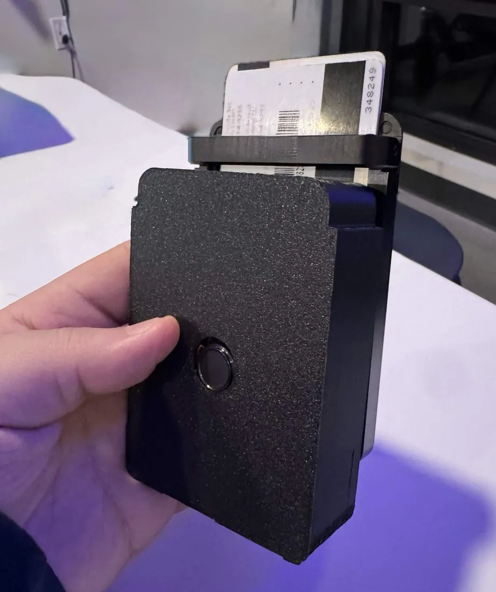
The problem
Pickpocketing in crowded transit hubs, concerts and tourist districts doesn't just cost people cash — it costs them their identity documents, their cards, and days of their life spent cancelling and replacing things.
The products that exist address the wrong half of the problem. RFID-blocking wallets stop contactless skimming but do nothing once the wallet is physically gone. Bluetooth trackers help you find a wallet after it's taken, but they don't prevent the theft, they may not alert you during the grab itself, and a thief can simply remove the tag.
Nothing on the market stops an unauthorised person from opening the wallet in the first place.
Approach
We built the wallet around a single testable claim:
If a wallet combines biometric authentication, BLE proximity monitoring and mobile alerting, it can prevent unauthorised access and notify the owner the moment separation occurs.
That gave us three independent defences instead of one.
| Layer | Defends against | Mechanism |
|---|---|---|
| Biometric lock | Unauthorised opening | FPC2534 match gates a servo latch |
| Motion + BLE | The grab itself | IMU detects irregular motion; BLE disconnect signals separation |
| RFID mesh | Contactless skimming | Passive shielding over the card stack |
We deliberately did not design a new wallet body from scratch. We took the card-ejection mechanism and form factor of an existing card-holder as our mechanical baseline and spent our engineering time on the electronics and the locking mechanism instead. Ten weeks is not enough to solve both problems well, and the mechanical one was already solved.
Architecture
The enclosure is a seven-layer stack, and that stack is the architecture.
| Layer | Contents |
|---|---|
| 1 — Face | Machined cutout for the fingerprint sensor; pinhole for the ambient light sensor |
| 2 — Gesture strip | Capacitive touch module for swipe and tap |
| 3 — PCB | ESP32-S3, sensor interface, power, audio, IMU, LED indicators |
| 4 — Battery | Rechargeable lithium cell |
| 5 — RFID mesh | Passive shielding against contactless readers |
| 6 — Card stack | The cards, behind everything above |
| 7 — Chassis | Bottom shell |
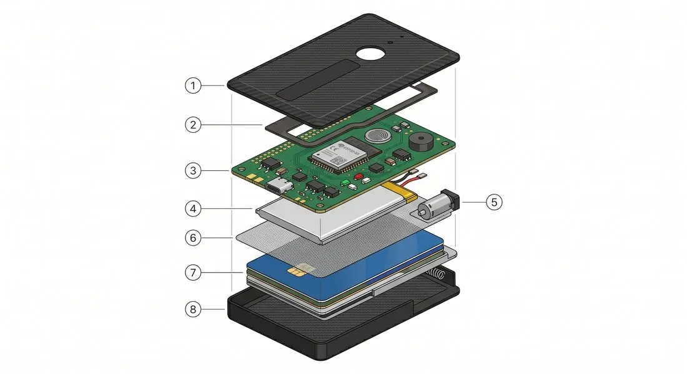
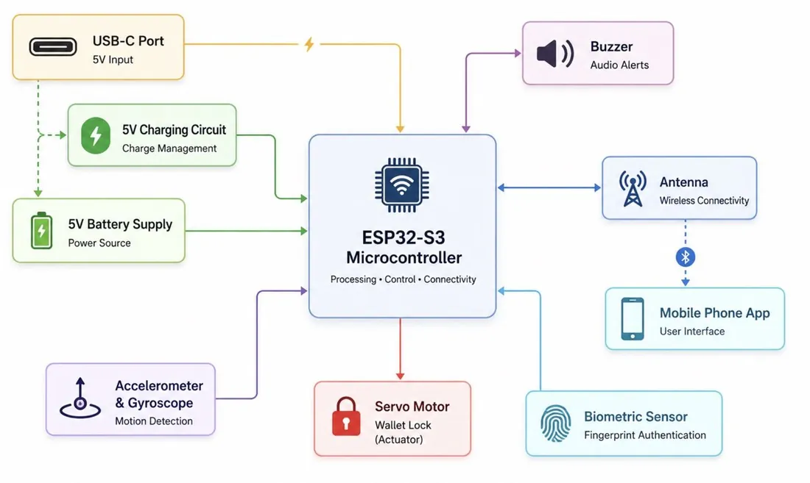
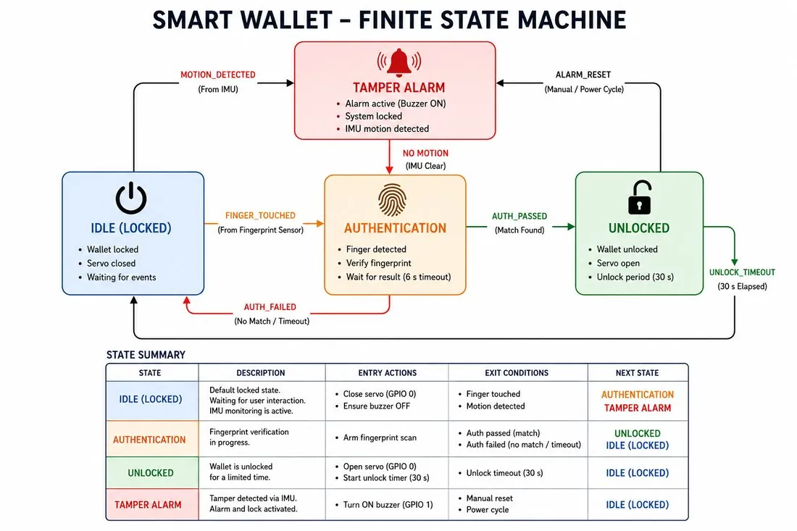
The PCB's job is narrow and worth stating plainly: authenticate, then actuate. On a fingerprint match it drives the servo that releases the latch. The IMU runs alongside as an independent watchdog — irregular motion combined with a dropped BLE connection means the wallet has left your pocket without you, and it alarms.
What I built
I owned two of this project's three subsystems: the biometric authentication firmware, and the PCB from schematic through layout.
Biometric firmware
I brought the FPC2534 up from datasheet to working authentication. The sensor isn't a read-a-value part — it packs its own MCU and authentication logic on board, so integrating it meant driving a state machine rather than polling a register. I implemented enrolment, identification, and the match-to-actuate path that releases the servo latch, in C++ on the ESP32-S3 under PlatformIO.
I understood the part well enough by the end to write a standalone bring-up guide for it — capacitive sensing theory from first principles, three worked code examples, and nine failure modes that aren't in the datasheet. That document is the strongest evidence I can offer that I understood the sensor rather than pasting an example sketch.
PCB
I designed the schematic and did the layout in KiCad: ESP32-S3, the ZIF-connected fingerprint sensor, IMU, power management, servo drive and indicator LEDs. I also made the board work after fabrication revealed three errors in my own design — covered honestly in the next section, because that recovery is a more useful thing to know about me than a clean first spin would have been.
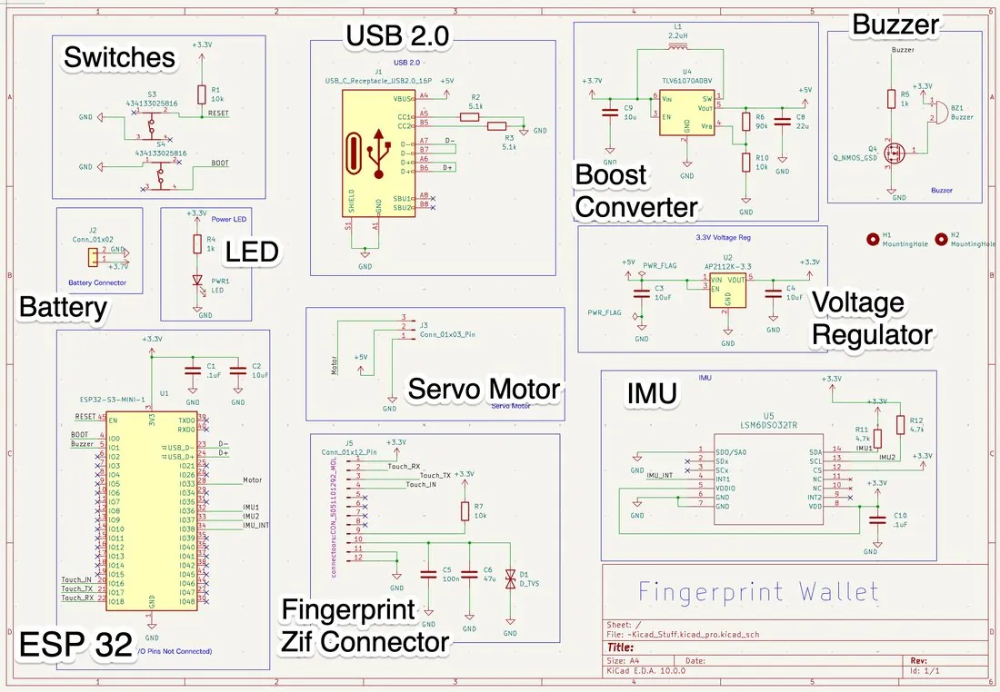
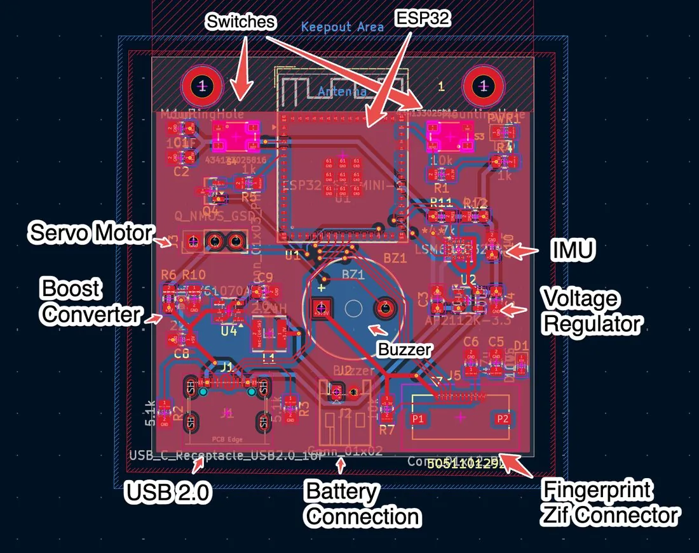
What I did not own
Aiden and Erictuan led the CAD and enclosure work and the BLE and mobile alerting path. I integrated against those interfaces but didn't design them.
Hard parts
Frame desynchronisation on a 921600-baud binary stream
The sensor link ran at 921600 baud carrying a binary protocol. The ESP32-S3's bootloader emits ASCII on the same line at reset, and those bytes landed inside the binary stream. A parser that assumed frames began where the previous one ended lost alignment on the first reset and never recovered — every subsequent frame was garbage, and the failure looked like a dead sensor rather than a framing problem.
The fix was to stop trusting stream position and start searching for structure: a byte-level sliding window scanning for the 0x04 protocol marker, re-establishing frame alignment from any starting offset. Once the parser could resynchronise on its own, injected bootloader noise became survivable rather than fatal.
Three errors in my own PCB, found at bring-up
The board came back from fabrication with three defects, all mine. I chose to fix all three in hardware rather than respin, because a new board would have cost roughly a week out of a ten-week schedule.
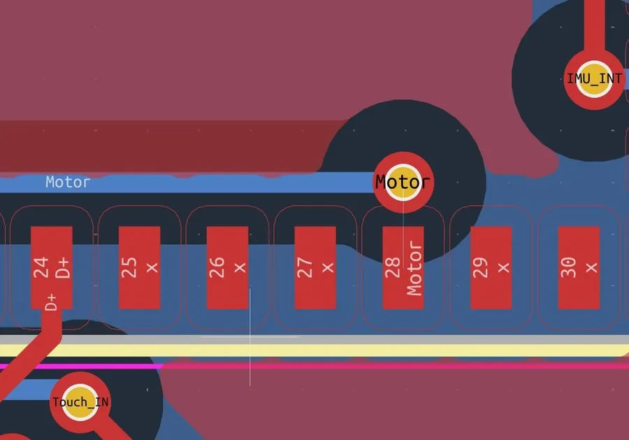
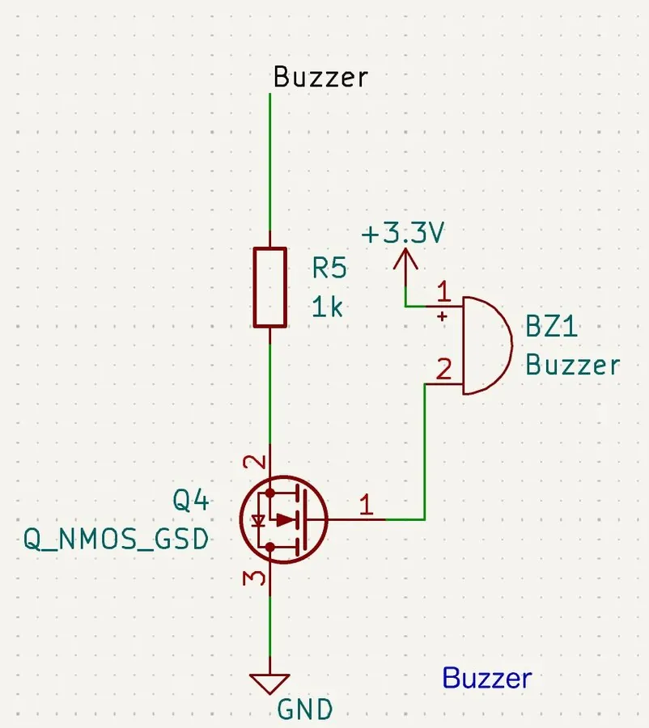
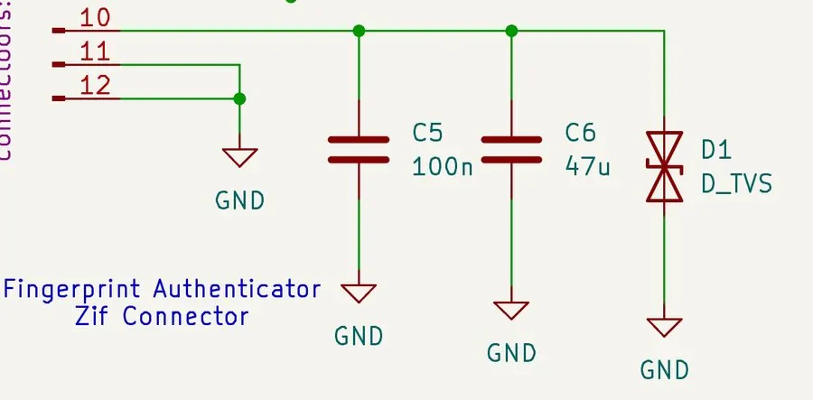
What I take from this is less about the individual mistakes than about the process gap behind them: I had no independent design review and no disciplined DRC pass before sending the board out. All three were catchable on a screen for free, and instead I caught them on a bench under deadline.
Results
The wallet works end to end: an enrolled fingerprint opens the latch, an unenrolled one doesn't, and the IMU plus BLE separation path fires an alert.
How the authentication path behaves
| Behaviour | Value | Where it comes from |
|---|---|---|
| Readings per identification attempt | 12 | FPC2534 default |
| Consecutive failures before lockout | 5 | FPC2534 default |
| Lockout duration | 15 s | FPC2534 default |
| Window to close before the servo re-latches | 30 s | My implementation |
The first three are the sensor's own matching behaviour, not decisions I made. The FPC2534 runs its authentication logic on-module, so multi-sample matching and the failure lockout are enforced by the part itself. They're configurable and I tried adjusting them, but the change in observed behaviour was small enough that I left the defaults alone.
I'm stating that plainly because the distinction matters. Knowing which behaviour belongs to your code and which belongs to the part you integrated is a basic requirement of working with a smart peripheral, and claiming the sensor's built-in lockout as a security decision of mine would be easy to catch and not worth the credit.
The 30-second re-latch is mine. On a successful match I drive the servo open and start a timer; when it expires the servo closes regardless of what the user is doing. The wallet fails secure. Staying open requires an explicit, recent, successful authentication.
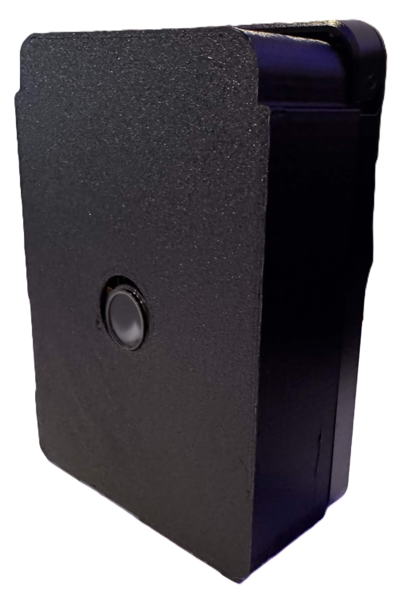
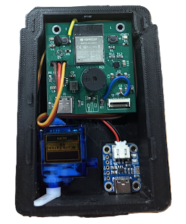
One limitation worth stating: the buzzer was sacrificed to the GPIO reassignment, so the audible alarm didn't make the final build.
The project was featured on the UCSD engineering school's Instagram. ECE 196 doesn't rank projects, so that's recognition rather than a placement.
What I'd do next
Give the wallet a way to talk back
Right now it tells the user almost nothing. There's no visual confirmation of whether the latch is locked, and no feedback during enrolment — you place your finger repeatedly and hope. That gap got worse when the buzzer lost its GPIO to the servo, because the device ended up with no audio channel and no meaningful visual one, despite the board carrying indicator LEDs.
I'd drive discrete LEDs on three states: locked / unlocked, enrolment progress, and lockout active. That last one matters more than it sounds — a locked-out wallet and a broken wallet are currently indistinguishable to the user, which is the kind of thing that makes a working product feel unreliable.
Replace the fixed re-latch timeout with a sensor
Thirty seconds is a guess. It's too short if you're fumbling for the right card at a counter, and far too long if you took your card and walked away. The wallet already has an IMU and a capacitive touch strip, and either could drive a better rule: re-latch when the card stack is pushed back in, or when the wallet has been still for a few seconds, with the fixed timeout as a fallback rather than the only mechanism.
Respin the PCB
Three of our four hardware problems were routing and footprint errors that a proper design review and a DRC pass with a second set of eyes would have caught before fabrication. That's the actual lesson, and it's cheaper to learn on a class project than at work.
Measure the power budget properly
The FPC2534 idles at 14 µA and pulls 5.2 mA active, but we never characterised the full system's draw against real battery life. For a device meant to live in a pocket all day, that number is the difference between a product and a prototype.
Thermal Presence Detection
Looking for a firmware engineer?
I'm open to full-time embedded and firmware roles.